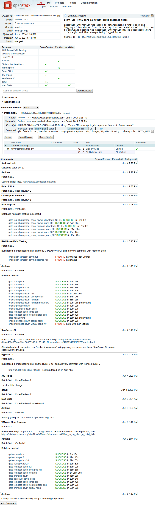
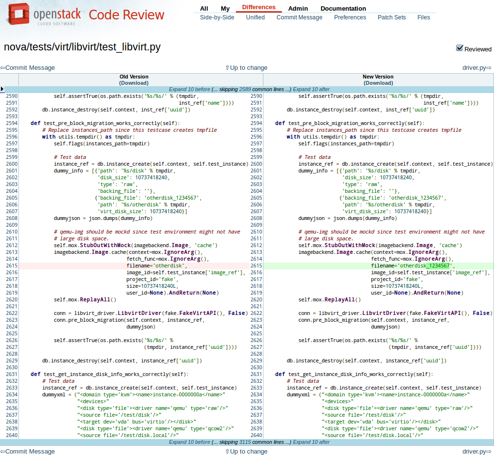
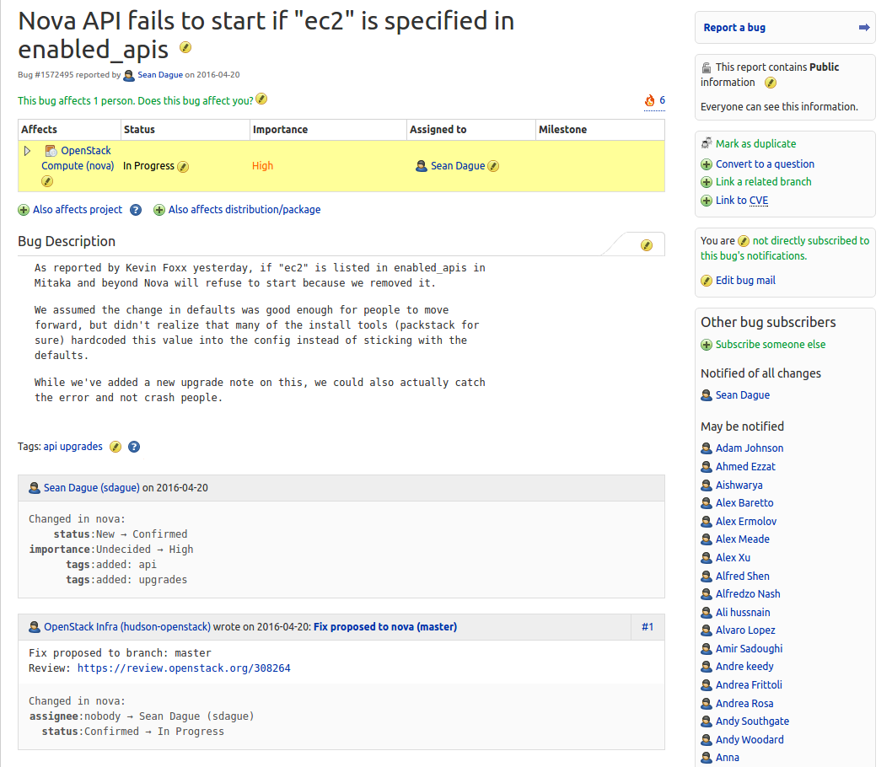
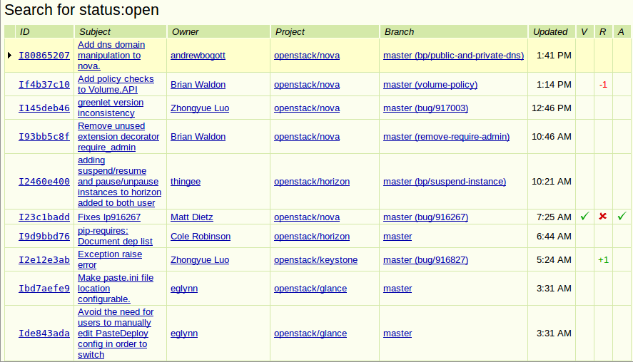

Scaling OpenStack Development
Continuous Integration Overview
OpenStack
Is open source software for building private and public clouds.

Projects
- Servers
- nova (compute)
- swift (object storage)
- glance (image service)
- keystone (identity service)
- neutron (network service)
- cinder (volume service)
- heat (orchestration)
- ceilometer (measurement)
- horizon (dashboard)
- trove (databases)
- ironic (bare metal)
- marconi (message queueing)
- Client libraries
- python-novaclient
- python-swiftclient
- python-glanceclient
- python-keystoneclient
- python-neutronclient
- python-cinderclient
- python-heatclient
- python-ceilometerclient
- python-openstackclient
- python-troveclient
- python-ironicclient
- python-marconiclient
Programs/Horizontal Efforts
- Documentation
- installation guides
- operations manuals
- API references
- howtos and tutorials
- Infrastructure
- continuous integration systems
- developer community resources
- Oslo
- common libraries
- copied code incubation
- Quality Assurance
- integration testing
- upgrade testing
- Release Management
- Translation/Internationalization
- Vulnerability Management
Release Management
- Time Based Releases
- Six Month Cadence
- Similar to Ubuntu and Fedora Release Schedules
- Design summits each cycle
- Continuously Open Trunk
- Develop directly on master
- Intra-Cycle Milestone Releases
- Post-Release Stable Branches
Contributors

- Unaffiliated individuals
- Commercial entities
- Nonprofit organizations
- National and local governments
- Number, quality, and area of contributions can change daily
Consistent Tooling
- Minimize meta-development
- Process divergence == wasted developer time
- Lowers onboarding time
- Consolidate tool development
- Minimize project-specific weird build crud
Developer Infrastructure
- Code review and VCS
- Gerrit
- Git
- git-review
- reviewday
- Test/build automation
- devstack-gate
- Jenkins
- JJB
- Zuul
- Repository mirrors
- Apache
- Cgit
- GitHub
- PyPI packages
- Job logs, artifacts
- Documentation/publication
- Releases/pre-releases
- IRC
- eavesdrop
- gerritbot
- meetbot
- statusbot
- Project blogs
- Collaboration
- Mailing lists
- Lodgeit paste
- Etherpad
- Authentication
- CLA
- membership
- Launchpad SSO
- Feature/bug tracking
Development Environment
- Python
- CentOS (2.6), Ubuntu LTS (2.7, 3.3, pypy)
- PEP-8 standards
- Oslo (common libraries)
- virtualenv/pip/tox
- Freenode IRC (#openstack-dev, #openstack-meeting)
- DevStack
- Tests run on all newly submitted changes
- Code merges are gated on tests
Project Gating

- Ensures Code Quality
- Protects developers
- Devs always start from working code
- Protects tree
- Egalitarian
- Process is the same for everyone
- Process is transparent
- Process is automated
Everything Is Automated

Process Flow

Gerrit
- Developed by Google for Android
- Stand-alone patch review system
- Integration points: hooks, JSON queries, event-stream
- Extensible review categories, default: Verified, Code-Review
Gerrit

Gerrit Diff View

Bug Integration - Launchpad

Approved Reviews

Git Review
- External Git subcommand
- Developers can easily incorporate code review into git workflow
- Zero-configuration
- Can be used for any project, being adopted by other projects
corvus@shiprock:~/git/neutron$ git commit -a
[new-versionpy ddf1dce] Base version.py on glance.
3 files changed, 28 insertions(+), 107 deletions(-)
delete mode 100644 version.py
corvus@shiprock:~/git/neutron$ git review
remote: Resolving deltas: 0% (0/3)
remote:
remote: New Changes:
remote: https://review.openstack.org/3072
remote:
To ssh://corvus@review.openstack.org:29418/openstack/neutron.git
* [new branch] HEAD -> refs/for/master/bug/916018
Types of Tests
- Unit tests
- Should be run in virtual environments, may run in operating systems
- Fairly quick and easy for a developer to run
- Integration tests
- May be able to run on virtual servers, should run on real servers
- Difficult and time-consuming for a developer to run
Specific Challenges/Solutions
- Testing effect of merging change
- Using cloud builders
- Large numbers of similar projects
- Disparate hardware configurations
Gerrit Git Prep
- Test the result of the change, not the change
- openstack-infra/config:modules/jenkins/files/slave_scripts/gerrit-git-prep.sh
- For each gerrit change:
- grabs target branch
- cleans tree
- merges change to be tested
Interrelated Integration Testing
- devstack-gate
- boot fresh servers
- run DevStack
- run integration tests
- Gate proposed change against current state of other projects
Devstack-Gate Problems
- Tests are slow
- Cloud API calls can fail
- External services are unreliable
Devstack-Gate Solutions
- Create a new node
- Pre-fetch all needed packages, repos
- Snapshot to cloud image
- Maintain a pool of cloud nodes
- Slave can only be used for one test run
- Python and shell scripts run as jobs
- Partition tests and run them in parallel
Zuul
- A general purpose trunk gating system
- Interfaces with Gerrit and Jenkins
- Flexible configuration allows for many kinds of project automation
- Allows parallel testing of serialized changes
Bottlenecking
- Serialize changes across all projects
- Speculative execution of tests
- Run in parallel in order triggered
- Assume success
- Start over on failure
Zuul Simulation
Zuul Check Pipeline
pipelines:
- name: check
manager: IndependentQueueManager
trigger:
- event: patchset-created
success:
verified: 1
failure:
verified: -1
Zuul Gate Pipeline
pipelines:
- name: gate
manager: DependentPipelineManager
trigger:
- event: comment-added
approval:
- approved: 1
start:
verified: 0
success:
verified: 2
submit: true
failure:
verified: -2
Zuul Post-Merge Pipeline
pipelines:
- name: post
manager: IndependentQueueManager
trigger:
- event: ref-updated
ref: ^(?!refs/.*).*$
Zuul Release Pipeline
pipelines:
- name: release
manager: IndependentPipelineManager
trigger:
- event: ref-updated
ref: ^refs/tags/([0-9]+\.)+[0-9]+$
Zuul Project Configuration
projects:
- name: openstack/nova
check:
- gate-nova-pep8
- gate-nova-python26
- gate-nova-python27
- gate-tempest-devstack-vm
gate:
- gate-nova-pep8
- gate-nova-python26
- gate-nova-python27
- gate-tempest-devstack-vm
post:
- nova-branch-tarball
- nova-docs
- nova-upstream-translation-update
release:
- nova-tarball
- nova-docs
Templated Jobs
- TONS of consistent projects
- Manage everything through Git and code review
- Jenkins Job Builder
- Manage jobs as YAML files in Git
- Jobs updated via Jenkins API
- groupings of jobs supported
Example Job
- job:
name: gate-nova-pep8
builders:
- gerrit_git_prep
- pep8
publishers:
- console-log
Example Template
- project:
name: nova
github-org: openstack
tarball-site: tarballs.openstack.org
doc-publisher-site: docs.openstack.org
jobs:
- python-jobs
- python-folsom-bitrot-jobs
- python-grizzly-bitrot-jobs
- openstack-publish-jobs
- gate-{name}-pylint
- translation-jobs